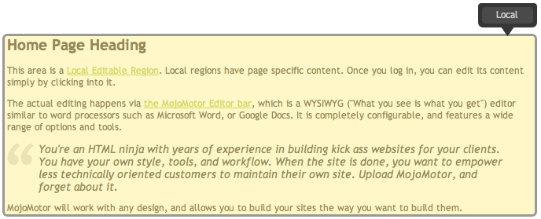
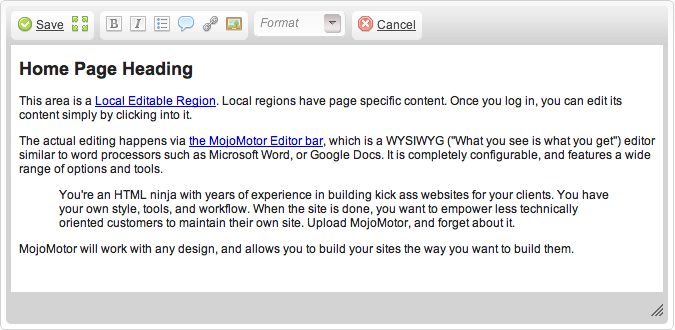

MojoMotor Editor
The MojoMotor Editor is the heart and soul of content editing within the system. Any Region can be
simply edited. When the Mojo Toolbar is exposed, regions are clearly identified for you:

To put a region into edit-mode, simply click into it.

Enabling HTML source editing
There are 2 ways the editor can be set up to edit the raw HTML instead of using the default WYSIWYG toolset.
- To permanently edit in this mode, use the "Account" link, and set your "Edit Mode" to "Plain Text". If at any time you wish to return to WYSIWYG, simply toggle back to "Graphical". Changes to your edit mode will be reflected the next time you go to edit a region.
- To enable temporary source code editing, you can add the 'Source' option into the editor toolbar. See system/mojomotor/config/ckeditor.php for examples. This change affects all members.
Configuring the toolbar
MojoMotor has attempted to put the most commonly used formatting options up by default. If you want to modify the buttons available, you can find them at system/mojomotor/config/ckeditor.php. Please note that changes to this file will only be reflected after a browser refresh. Here is the full list of options:
- Source
- Save
- NewPage
- Preview
- Templates
- Cut
- Copy
- Paste
- PasteText
- PasteFromWord
- SpellChecker
- Undo
- Redo
- Find
- Replace
- SelectAll
- RemoveFormat
- Form
- Checkbox
- Radio
- TextField
- Textarea
- Select
- Button
- ImageButton
- HiddenField
- Bold
- Italic
- Underline
- Strike
- Subscript
- Superscript
- NumberedList
- BulletedList
- Outdent
- Indent
- Blockquote
- CreateDiv
- JustifyLeft
- JustifyCenter
- JustifyRight
- JustifyBlock
- Link
- Unlink
- Anchor
- Image
- Flash
- Table
- HorizontalRule
- Smiley
- SpecialChar
- PageBreak
- Styles
- Format
- Font
- FontSize
- TextColor
- BGColor
- Maximize
- ShowBlocks
- About
The underlying technology for the editor bar is CKEditor. Full docs available at http://docs.cksource.com/